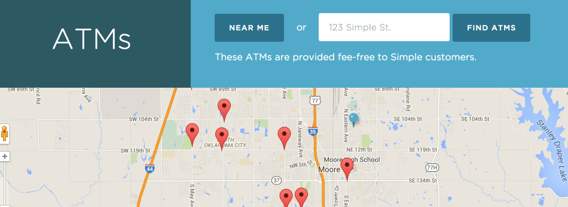

class: center, middle # ATM finding as a service at Simple --- class: center, middle ## Karl Kirch ## @joekarl  --- ## Geodata at Simple * Transaction locations * Free ATM locations * Analytics/Business Intelligence --- ## ATM finder service * ATMs in a given bounding box * Nearest ATM to a location * Nearest ATM to an address <div id="atmFinder">  </div> --- ## Considerations * Should be fast * Static data set (changes every 6 months or so) * Small amount of data (10mb CSV file) * Runs in AWS --- ## The essence of a geo API app * A geo data store * A way to populate the data store * A way to search the data store * Multiple people searching the data store at a given time --- ## The tools * Golang * An RTree * Mapbox Geocoding API --- ## Why not Postgres? * Data all fits in memory * Golang is good for fairly CPU intensive things * Don't need the overhead/latency * One less server to run/manage --- class: center, middle ## Code walkthrough --- class: center, middle ## Questions?